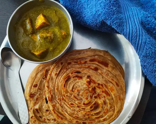

Palak Paneer

Description
Palak paneer is a popular North Indian dish that combines fresh spinach (palak) and paneer,
a type of Indian cottage cheese. This dish is known for its vibrant green color and rich,
creamy texture. Often enjoyed with naan, roti, or rice, palak paneer is a
nutritious and flavorful dish that highlights the versatility of Indian vegetarian cuisine.
Ingredients
- 2 tablespoons olive oil
- 1 diced onion
- 6 crushed garlic cloves
- 2 teaspoons ground coriander
- 2 teaspoons ground turmeric
- 2 teaspoons garam masala
- 2 teaspoons red pepper flakes
- 2 teaspoons curry powder
- 2 teaspoons ground cumin
- 1 teaspoon salt
- 2 (10 ounce) packages frozen chopped spinach, thawed and drained
- 3 diced tomatoes
- 1 cup water
- 2 tablespoons grated fresh ginger root
- 2 cups cubed paneer
Directions
- Add 1 tbsp of olive oil in a skillet over medium head
- Add onion and cook and stir it in hot oil until slightly tender (around 5 minutes)
- Add garlic, coriander, turmeric, garam masala, red pepper flakes, curry powder, cumin and sale and cook it until fragrant (about 1 minute)
- Add Spinich, tomatos, water, and ginger and mix
- Let it simmer for 20 minutes
- Remove from heat and cool slighty (around 5 minutes)
- Transfer spinach mixture to a blender and blend until smooth
- Heat 1 tbsp olive oil in the skillet over medium heat
- Add and stir paneer in hot oil until lightly browned (around 5 minutes)
- Add puréed spinach mixture to skillet and cook until heated through (around 3 to 5 minutes)
- Your Palak Paneer dish is ready! Eat it with naan or rice and enjoy!